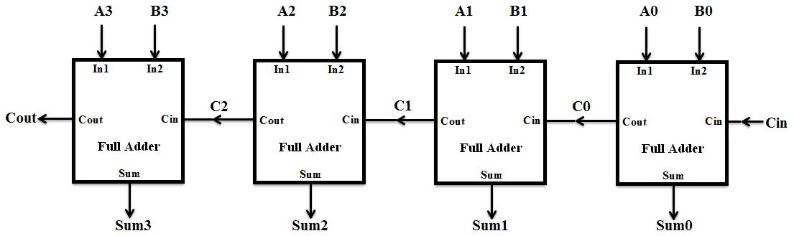

Digital System Design
Table of Contents
Verilog Basics
Data Types
| Data Type | Purpose | Characteristics |
|---|---|---|
wire |
Combinational logic and connections | Cannot hold state, used in continuous assignments |
reg |
Sequential and combinational logic | Holds state, used inside always blocks |
integer |
Signed 32-bit value for loops/counters | Used in loops and non-synthesizable code |
real |
Floating-point value | Used in non-synthesizable, behavioral code |
time |
64-bit value to represent simulation time | Used for timing and measuring delays in simulation |
tri |
Tri-state buffer signal | Can take high-impedance (Z) values |
Vectors in Verilog
Vectors in Verilog are used to represent multi-bit signals, which are crucial when dealing with buses, registers, or large numbers. They allow for grouping multiple bits into a single variable.
A vector is declared by specifying the range of bits using [MSB:LSB], where MSB is the most significant bit and LSB is the least significant bit.
wire [3:0] bus; // 4-bit wide wire (vector)
reg [7:0] data; // 8-bit register
Individual bits or a range of bits within a vector can be accessed as follows:
wire [7:0] data;
assign bit3 = data[3]; // Accessing the 3rd bit of data
assign lower_nibble = data[3:0]; // Accessing the lower 4 bits of data
You can assign values directly to vectors:
reg [3:0] result;
result = 4'b1010; // Assigning binary value
result = 4'hA; // Assigning hexadecimal value
A vector can have zero width when the MSB and LSB are the same, meaning it's a single-bit signal:
wire [0:0] single_bit; // Equivalent to a scalar
By default, vectors are unsigned, but they can be declared as signed if needed:
signed reg [7:0] signed_data; // Signed 8-bit register
In signed vectors, the most significant bit (MSB) is treated as the sign bit.
Primitives
A Verilog primitive is a pre-defined logic element used in digital designs. These include basic gates like and, or, nand, and xor, with fixed functions that don't require module definitions.
Output Declaration: In Verilog, when declaring a UDP, the output must always be listed first, followed by the input(s). This order is essential for the proper functioning of the UDP.
Types of Primitives:
- Combinational Primitives: e.g., and, or, xor
- Sequential Primitives: Flip-flops, latches
User Defined Primitives (UDPs)
UDPs are custom-defined logic, either combinational or sequential, declared using the primitive keyword. They use a truth table to define behavior.
- Example (Combinational UDP):
```verilog
primitive my_and (out, in1, in2); output out; input in1, in2; // The 'table' defines the behavior of this custom primitive. // Each row in the table specifies input combinations and the corresponding output. // For an AND gate, the output is 1 only when both inputs are 1. table 0 0 : 0; // If both inputs are 0, the output is 0. 1 1 : 1; // If both inputs are 1, the output is 1. // For simplicity, intermediate input states (like 0 1 or 1 0) are not explicitly defined here, // but in a full AND gate implementation, these would typically output 0. endtable endprimitive```
Verilog Operator Precedence
In Verilog, operators follow a specific order of precedence. This determines how expressions are evaluated when there are multiple operators in the same expression. Below is the list of operators in order of precedence, from highest to lowest:
- Unary operators
+,-(unary plus and minus)!(logical NOT)~(bitwise NOT)&,~&(reduction AND, NAND)|,~|(reduction OR, NOR)-
^,~^,^~(reduction XOR, XNOR) -
Multiplicative operators
-
*,/,%(multiply, divide, modulus) -
Additive operators
-
+,-(addition, subtraction) -
<<,>>(logical shift left, right) -
Relational operators
-
<,<=,>,>=(less than, less than or equal, greater than, greater than or equal) -
Equality operators
==,!=(logical equality, inequality)-
===,!==(case equality, case inequality) -
Bitwise operators
-
&,|,^,^~,~^(AND, OR, XOR, XNOR) -
Logical operators
&&(logical AND)-
||(logical OR) -
Conditional operator
-
? :(ternary operator) -
Assignment operators
=,+=,-=,*=,/=,%=,<<=,>>=,&=,|=,^=(assignment and compound assignments)
Shifts
In Verilog, shift operations move bits of a value to the left or right. There are two types: logical shifts and arithmetic shifts.
1. Logical Shifts
Logical shifts move bits and fill the vacated positions with zeros.
a. Logical Left Shift (<<)
Shifts bits to the left by the specified amount, inserting zeros on the right. This is equivalent to multiplying by a power of 2.
Syntax:
result = value << shift_amount;
Example:
wire [3:0] value = 4'b1010;
assign result = value << 1; // Result: 0100
b. Logical Right Shift (>>)
Shifts bits to the right, inserting zeros on the left.
Syntax:
result = value >> shift_amount;
Example:
wire [3:0] value = 4'b1010;
assign result = value >> 1; // Result: 0101
2. Arithmetic Shifts
Arithmetic shifts preserve the sign of signed numbers when shifting right.
a. Arithmetic Right Shift (>>>)
Shifts bits to the right, preserving the sign by filling the leftmost bits with the sign bit (MSB).
Syntax:
result = value >>> shift_amount;
Example:
wire signed [3:0] value = -4; // Binary: 1100 (two's complement)
assign result = value >>> 1; // Result: 1110
Functions and Tasks
| Aspect | Functions | Tasks |
|---|---|---|
| Return Type | Returns a single value. | Can return multiple values via output ports. |
| Time Control | No timing control (#, @, wait not allowed). |
Supports timing control (can use #, @, wait). |
| Arguments | Only input arguments. |
Can have input, output, and inout arguments. |
| Usage | Used in expressions directly. | Called as a separate statement. |
| Execution Time | Executes in zero simulation time. | Takes simulation time to execute. |
| Use Case | Simple, combinational calculations. | Complex tasks with delays or multiple outputs. |
Example Function:
function [3:0] add;
input [3:0] a, b;
begin
add = a + b;
end
endfunction
Example Task:
task add_sub;
input [3:0] a, b;
output [3:0] sum, diff;
begin
sum = a + b;
diff = a - b;
end
endtask
Example Task (With Event Control):
task event_control_example;
input [3:0] a, b;
output reg [3:0] result;
begin
wait (a == b); // Wait until a equals b
result = a + b; // Perform addition
end
endtask
Example Task (with output and inout Arguments Called as a Separate Statement):
module task_example;
reg [3:0] x, y, z, sum_result, diff_result;
initial begin
x = 4'b1010; // Assign some values
y = 4'b0110;
z = 4'b0011;
// Call the task as a separate statement
arithmetic_operations(x, y, sum_result, z); // `z` will be modified in-place as an inout
end
endmodule
task arithmetic_operations;
input [3:0] a, b; // Input arguments
output reg [3:0] sum; // Output argument
inout [3:0] diff; // Inout argument
begin
sum = a + b; // Perform addition
diff = diff - a; // Modify the inout value
end
endtask
Logic Design
Boolean Algebra
| Rule | Expression | Hint |
|---|---|---|
| Identity Law | A + 0 = A | No change when OR'ed with 0 |
| Identity Law | A 1 = A | No change when AND'ed with 1 |
| Null Law | A + 1 = 1 | OR'ing with 1 results in 1 |
| Null Law | A 0 = 0 | AND'ing with 0 results in 0 |
| Complement Law | A + A' = 1 | A variable OR'ed with its complement is 1 |
| Complement Law | A A' = 0 | A variable AND'ed with its complement is 0 |
| Idempotent Law | A + A = A | OR'ing a variable with itself leaves it unchanged |
| Idempotent Law | A A = A | AND'ing a variable with itself leaves it unchanged |
| Domination Law | A + A'B = A + B | Apply the Distributive Law to simplify |
| Distributive Law | A(B + C) = AB + AC | Distributes AND over OR |
| Distributive Law | A + BC = (A + B)(A + C) | Distributes OR over AND |
| Absorption Law | A + AB = A | Removes redundant terms |
| Absorption Law | A(A + B) = A | Removes redundant terms |
| Double Negation Law | (A')' = A | Negation of a negation returns the original value |
| De Morgans Law | (A B)' = A' + B' | Apply to break AND terms when converting SOP to POS |
| De Morgans Law | (A + B)' = A' B' | Apply to break OR terms when converting POS to SOP |
| Involution Law | (A'') = A | A variable twice negated is equal to itself |
| Consensus Theorem | AB + A'C + BC = AB + A'C | Simplifies expressions by eliminating redundant terms |
| Distributive (SOP to POS hint) | A + BC = (A + B)(A + C) | Useful for converting SOP to POS |
| Distributive (POS to SOP hint) | A(B + C) = AB + AC | Useful for converting POS to SOP |
| Demorgans (SOP to POS hint) | (A B)' = A' + B' | Apply De Morgans Law during the conversion |
| Demorgans (POS to SOP hint) | (A + B)' = A' B' | Apply De Morgans Law during the conversion |
| Redundancy Law | AB + AB' = A | Removes redundant variables from the equation |
Sequential and Combinational Assignments
- Sequential = Procedural: Sequential logic updates state based on clock edges and uses procedural assignments, typically with non-blocking (
<=) assignments. It is modeled insidealwaysblocks that are sensitive to clock edges (e.g.,posedge clk). This describes systems like flip-flops or registers that rely on previous states.
Example:
verilog
always @(posedge clk or posedge reset) begin
if (reset)
q <= 0; // Asynchronous reset
else
q <= d; // Update q with d at clock edge
end
-
Combinational = Continuous: Combinational logic depends purely on the current inputs and is described using continuous (blocking) assignments. It models circuits like AND, OR gates, where output is updated as soon as inputs change, without regard to clock cycles.
Example:
verilog assign y = a & b; // Output y changes immediately based on a and b
Relevant Constructs
-
alwaysblocks: Used to describe both sequential and combinational logic. For sequential logic,always @(posedge clk)oralways @(negedge clk)is used, whereas for combinational logic,always @(*)is used to capture all input changes automatically. Example:verilog always @(*) begin result = a | b; // Combinational logic triggered by any input change end -
initialblocks: Used to define initial conditions in simulations. They execute once at the start of the simulation and are commonly used for testbenches or initializing registers/variables in simulation but are not synthesized into hardware. Exampleverilog initial begin reg_x = 0; // Initialize reg_x to 0 at simulation start end
Key Points
- Blocking (
=) vs. Non-blocking (<=): In sequential logic (always @(posedge clk)), use non-blocking assignments (<=) to ensure parallel updates. In combinational logic, blocking assignments (=) can be used to execute statements sequentially.
State Machine
A state machine is a computational model used to design both software and hardware systems. It consists of a set of states, transitions between states, and actions that occur based on inputs.
Components
- States: Defined conditions or situations the system can be in.
- Transitions: Conditions that trigger a change from one state to another.
- Inputs: External events or conditions that affect state transitions.
- Outputs: Actions or results produced during or after a state transition.
Types of State Machines
- Finite State Machine (FSM): Has a finite number of states and transitions between them.
- Deterministic FSM (DFA): Every state has exactly one transition for each input.
-
Non-deterministic FSM (NFA): A state can have multiple transitions for the same input.
-
Mealy Machine: The output depends on both the current state and the input.
- Moore Machine: The output depends only on the current state.
Applications
- Control Systems: Used in embedded systems for managing device behavior.
- Protocols: Helps in defining the sequence of operations in communication protocols.
- Game Design: To model different game states such as playing, paused, or game over.
Example
module fsm_example (
input wire clk, // Clock input
input wire reset, // Asynchronous reset signal (active high)
input wire trigger, // Trigger input to transition between states
output reg out // Output signal that depends on the current state
);
// Define the states as an enumerated type using a 2-bit register
typedef enum reg [1:0] {
IDLE = 2'b00, // State 0: Idle state (default)
STATE1 = 2'b01, // State 1: Represents the first active state
STATE2 = 2'b10 // State 2: Represents the second active state
} state_t;
// Current state and next state registers
reg state_t current_state, next_state;
// Sequential logic for state transition
// This block updates the current state on every clock edge or reset
always @(posedge clk or posedge reset) begin
if (reset) begin
current_state <= IDLE; // On reset, go to IDLE state
end else begin
current_state <= next_state; // On clock, update to the next state
end
end
// Combinational logic for state transition based on current state and input trigger
always @(*) begin
// Default next state and output values
next_state = current_state; // Hold the current state by default
out = 1'b0; // Default output is 0
// State transition logic
case (current_state)
IDLE: begin
// In IDLE, if 'trigger' is high, move to STATE1
if (trigger)
next_state = STATE1;
// Output remains 0 in IDLE
end
STATE1: begin
// In STATE1, set output high
out = 1'b1;
// If 'trigger' is high, move to STATE2, otherwise go back to IDLE
if (trigger)
next_state = STATE2;
else
next_state = IDLE;
end
STATE2: begin
// In STATE2, output remains high
out = 1'b1;
// If 'trigger' goes low, return to IDLE
if (!trigger)
next_state = IDLE;
end
default: begin
// Default case to handle any undefined state (shouldn't happen)
next_state = IDLE; // Return to IDLE state if something goes wrong
end
endcase
end
endmodule
Simulations
Delays in Verilog
Propagation delays in Verilog simulate the time it takes for signals to propagate through circuits.
Delayed Assignments
In continuous assignments, use #delay to specify how long it takes for the output to update after a change in the inputs.
assign #5 y = a & b; // y updates 5 time units after a or b changes
```
### Why Use Delays?
- **Timing Simulation:** Models real-world signal delays.
- **Accurate Behavior:** Ensures proper timing in combinational logic.
### Delays in Procedural Assignments
Delays can also be applied in **procedural blocks** like `always`:
```verilog
always @ (a or b) begin
#3 out = a & b; // out updates 3 time units after input changes
end
Inertial vs. Transport Delays
- Inertial Delay: This is the default type of delay in Verilog. It filters out glitches, meaning only input pulses longer than the delay propagate to the output.
- Example: If
#5is used, pulses shorter than 5 time units will be filtered.
verilog
assign #5 y = a & b; // Inertial delay, y updates only if changes persist for 5 time units
- Transport Delay: This models a physical delay without filtering any input pulses. Even if an input changes rapidly, the signal is propagated to the output after the delay.
- Example: Use
transportto force transport delay behavior.
verilog
assign #5 y = transport a & b; // Transport delay, y updates exactly 5 time units after input change
Key Differences:
- Inertial delay: Mimics real-world circuits where short glitches are filtered.
- Transport delay: Models pure signal propagation without glitch filtering.
Wait Statements
In Verilog, the wait statement is used to pause the execution of a block until a certain condition becomes true. Unlike an always or @(posedge clk) block that waits for specific events (like clock edges), the wait statement halts the execution until the specified condition is met. Primarily used with delays to simulate hardware restrictions.
Syntax:
wait (condition) begin
// Code to execute after the condition is true
end
Example:
reg signal, result;
initial begin
result = 0;
signal = 0;
#10 signal = 1; // Signal changes after 10 time units
wait (signal == 1) begin
result = 1; // Result is updated after signal becomes high
end
end
Applications
4-bit Adder
A 4-bit adder adds two 4-bit binary numbers together, producing a 4-bit sum output along with a carry-out bit that indicates an overflow if the sum exceeds the capacity of 4 bits.

Ripple Carry Adder (RCA)
module FullAdder (A, B, Ci, Co, S);
input A, B, Ci; // Inputs: A, B, and Carry In (Ci)
output S, Co; // Outputs: Sum (S) and Carry Out (Co)
assign S = A ^ B ^ Ci; // Sum calculation
assign Co = (A & B) | (B & Ci) | (A & Ci); // Carry Out calculation
endmodule
module Adder4 (S, Co, A, B, Ci);
input [3:0] A, B; // 4-bit inputs
input Ci; // Carry input
output [3:0] S; // 4-bit sum output
output Co; // Carry out
wire [3:1] C; // Internal carry signals
// Instantiate 4 Full Adders
FullAdder FA0 (A[0], B[0], Ci, C[1], S[0]);
FullAdder FA1 (A[1], B[1], C[1], C[2], S[1]);
FullAdder FA2 (A[2], B[2], C[2], C[3], S[2]);
FullAdder FA3 (A[3], B[3], C[3], Co, S[3]);
endmodule
Look-Ahead Adder (CLA)
A 4-bit carry look-ahead adder (CLA) is a faster alternative to the ripple carry adder, as it calculates the carries in parallel rather than waiting for each carry to propagate through the stages sequentially. The carry look-ahead adder computes the carry signals using the generate (G) and propagate (P) functions.
module cla_4bit (
input [3:0] A, B,
input Cin,
output [3:0] Sum,
output Cout
);
wire [3:0] G, P; // Generate and propagate signals
wire C1, C2, C3;
// Generate and propagate signals
assign G = A & B; // Generate
assign P = A | B; // Propagate
// Carry look-ahead logic
assign #5 C1 = G[0] | (P[0] & Cin);
assign #5 C2 = G[1] | (P[1] & G[0]) | (P[1] & P[0] & Cin);
assign #5 C3 = G[2] | (P[2] & G[1]) | (P[2] & P[1] & G[0]) | (P[2] & P[1] & P[0] & Cin);
assign #5 Cout = G[3] | (P[3] & G[2]) | (P[3] & P[2] & G[1]) | (P[3] & P[2] & P[1] & G[0]) | (P[3] & P[2] & P[1] & P[0] & Cin);
// Sum calculation
assign #5 Sum[0] = A[0] ^ B[0] ^ Cin;
assign #5 Sum[1] = A[1] ^ B[1] ^ C1;
assign #5 Sum[2] = A[2] ^ B[2] ^ C2;
assign #5 Sum[3] = A[3] ^ B[3] ^ C3;
endmodule
Delay Comparison: Carry Look-Ahead Adder (CLA) vs. Ripple Carry Adder (RCA)
1. Ripple Carry Adder (RCA)
- Delay Growth: Linear
O(N)(increases with the number of bits) - Total Delay:
N * Gate Delay per Full Adder
2. Carry Look-Ahead Adder (CLA)
- Delay Growth: Logarithmic
O(log N)(grows slower as the number of bits increases) - Total Delay:
log_2(N) * Gate Delay per Stage
3. Comparison of Delays
| Number of Bits | RCA Delay (Linear) | CLA Delay (Logarithmic) |
|---|---|---|
| 4 bits | 20 ns | 20 ns |
| 8 bits | 40 ns | 15 ns |
| 16 bits | 80 ns | 20 ns |
| 32 bits | 160 ns | 25 ns |
| 64 bits | 320 ns | 30 ns |
4-to-1 Mux
A 4-to-1 multiplexer selects one of four input signals based on a 2-bit selection input and forwards the selected input to the output.
module Mux4to1 (
input wire I0, I1, I2, I3, // 4 data inputs
input wire S0, S1, // 2 select lines
output wire Y // Output
);
assign Y = (~S1 & ~S0 & I0) | // Select I0 when S1 = 0, S0 = 0
(~S1 & S0 & I1) | // Select I1 when S1 = 0, S0 = 1
( S1 & ~S0 & I2) | // Select I2 when S1 = 1, S0 = 0
( S1 & S0 & I3); // Select I3 when S1 = 1, S0 = 1
endmodule
Shift Register
4-bit Left Shift
A 4-bit left shift register shifts the contents of the register one bit to the left on each clock cycle, with a new bit introduced at the least significant bit (LSB) and the most significant bit (MSB) being discarded.
module LeftShiftRegister (
input wire clk, // Clock input
input wire reset, // Reset input
input wire D_in, // Serial data input
output reg [3:0] Q // 4-bit parallel output
);
// On the positive edge of the clock, perform the left shift
always @(posedge clk or posedge reset) begin
if (reset) begin
Q <= 4'b0000; // Reset all outputs to 0
end else begin
Q <= {Q[2:0], D_in}; // Shift left and input new data bit on Q0
end
end
endmodule
8-bit Left Shift
module shift_register_8bit (
input wire SI, // Serial input
input wire Clk, // Clock signal (rising edge)
input wire EN, // Enable (active high)
output reg SO // Serial output
);
// Internal 8-bit register to hold the shift data
reg [7:0] shift_reg;
// Always block triggered on rising edge of clock
always @(posedge Clk) begin
if (EN) begin
// Shift register: shift in SI and shift out MSB (SO)
SO <= shift_reg[7]; // MSB is shifted out
shift_reg <= {shift_reg[6:0], SI}; // Shift left and input SI
end
end
endmodule
8-bit Counter (Lab 3)
Lab simulation: 3-Bit Up/Down counter with a clear and load.
This lab involves designing an 8-bit up/down counter using Verilog, implemented on the NEXYS-4 FPGA board. A Vivado project is provided for this example.
The CD74HC190/191 and CD54HC190/191 are highly versatile presettable up/down counters commonly used in digital electronics for tasks requiring accurate counting, such as digital clocks, timers, and frequency dividers. These ICs can be configured to count in either binary (CD74HC191) or BCD (Binary-Coded Decimal) format (CD74HC190), and support synchronous counting with a variety of control options, including asynchronous presetting, counting direction control, and enabling inputs. With additional outputs like ripple carry and terminal count, these counters are ideal for cascading multiple units to create larger counting systems.
In Lab 3, we implemented an 8-bit up/down counter based on the functionality of the 74HC190/191 but directly in Verilog, bypassing the need for discrete hardware. This allowed us to overcome common design challenges such as signal ripple effects and cascading hazards that typically occur when connecting multiple 4-bit counters. By using Verilog, we streamlined the design, implementing advanced features such as parallel loading, which enables the counter to start from a user-defined value, and a clock control to slow down the counting process for easier observation.
Identifying Required Number of bits
To determine how many bits are needed to count to a specific number \(N\), use the following steps:
- Use the formula:
n = log2(N)wherenis the number of bits. - Round up the result to the nearest whole number.
- A counter with
nbits can represent numbers from0to2^n - 1, which must be greater than or equal to \(N\).
Example:
To count up to 100:
n = log2(100)6.64- Round up to 7.
You would need 7 bits to count up to 100, as 7 bits can represent values from 0 to 127.
Parallel Loading
Parallel loading allows a counter to load a preset value into all its flip-flops simultaneously in a single clock cycle. By using input lines (like A-D or D0-D3) and a load signal, the counter can instantly update its value upon the next clock cycle, bypassing the need for sequential counting. This is particularly useful for initializing the counter or synchronizing multiple counters efficiently. In this lab, we used parallel loading to preset the 8-bit counter with values determined by the input switches, adding greater flexibility to the counting process.
Synchronous 4-bit Up/Down Counter (74HC192)
module counter_74HC192 (
input wire Clr, // Clear the counter
input wire Load, // Load the counter with a value
input wire Up, // Count up when asserted
input wire Down, // Count down when asserted
input wire [3:0] P, // Data input for loading preset
input wire Clk, // Clock input
output reg [3:0] Q // 4-bit counter output
);
// Always block, sensitive to Clk, Clr, Load, Up, Down
always @(posedge Clk or posedge Clr or posedge Load) begin
if (Clr) begin
Q <= 4'b0000; // Clear the counter
end
else if (Load) begin
Q <= D; // Load the counter with input value
end
else if (Up && !Down) begin
Q <= Q + 1; // Increment counter
end
else if (Down && !Up) begin
Q <= Q - 1; // Decrement counter
end
end
endmodule
SR Latch
SR Latch Using a Boolean Equation
module sr_latch_boolean (
input wire S, // Set input
input wire R, // Reset input
output reg Q, // Output
output reg Qn // Inverted output
);
always @(*) begin
if (S && !R) begin
Q <= 1; // Set
Qn <= 0;
end
else if (!S && R) begin
Q <= 0; // Reset
Qn <= 1;
end
// If S == 0 and R == 0, Q and Qn retain previous state (no action)
end
endmodule
SR Latch Using Gate-Level Description
module sr_latch_gate_level (
input wire S, // Set input
input wire R, // Reset input
output wire Q, // Output
output wire Qn // Inverted output
);
wire nand1_out, nand2_out;
// NAND gates for SR Latch
nand (nand1_out, S, Qn); // First NAND gate
nand (nand2_out, R, Q); // Second NAND gate
assign Q = nand1_out;
assign Qn = nand2_out;
endmodule
4-bit Comparator
A 4-bit comparator is a digital circuit that compares two 4-bit binary numbers and outputs the result of their comparison. It determines whether one number is greater than, less than, or equal to the other.
Inputs
- A[3:0]: 4-bit binary number (A3, A2, A1, A0)
- B[3:0]: 4-bit binary number (B3, B2, B1, B0)
Outputs
- A > B: Output is 1 if the binary number A is greater than B.
- A < B: Output is 1 if the binary number A is less than B.
- A = B: Output is 1 if the binary number A is equal to B.
Logic for Comparison
To compare two 4-bit numbers, the comparison starts from the most significant bit (MSB) down to the least significant bit (LSB):
- A > B:
- If A3 > B3, then A > B regardless of the lower bits.
- If A3 = B3, move to compare A2 and B2.
-
Repeat for all bits until a difference is found or A = B.
-
A < B:
- If A3 < B3, then A < B.
- If A3 = B3, move to compare A2 and B2.
-
Continue this until a difference is found or A = B.
-
A = B:
- If all bits (A3 to A0) are equal to their corresponding B bits, then A = B.
Truth Table
| A3 | A2 | A1 | A0 | B3 | B2 | B1 | B0 | A > B | A < B | A = B |
|---|---|---|---|---|---|---|---|---|---|---|
| 0 | 0 | 0 | 1 | 0 | 0 | 0 | 1 | 0 | 0 | 1 |
| 1 | 0 | 1 | 0 | 0 | 1 | 1 | 0 | 1 | 0 | 0 |
| 0 | 1 | 1 | 1 | 1 | 0 | 0 | 1 | 0 | 1 | 0 |
| ... | ... | ... | ... | ... | ... | ... | ... | ... | ... | ... |
Verilog Implementation
A simple implementation in Verilog:
module Comparator4bit(
input [3:0] A, B,
output A_greater, A_less, A_equal
);
assign A_greater = (A > B);
assign A_less = (A < B);
assign A_equal = (A == B);
endmodule
Nexys A7

To do
- Bypass capacitors required in FPGAs
- Division, except by powers of 2 is not supported in Vivado
- If you use an if statement, but dont have an else, the synthesizer may create a latch you did not expect.
- Synthesis vs implementation